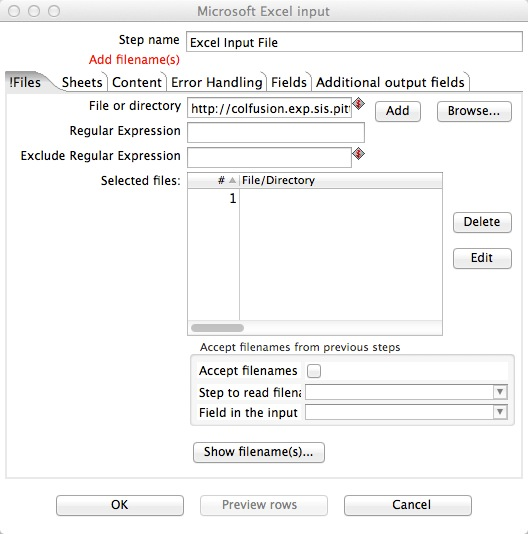
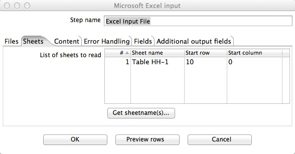
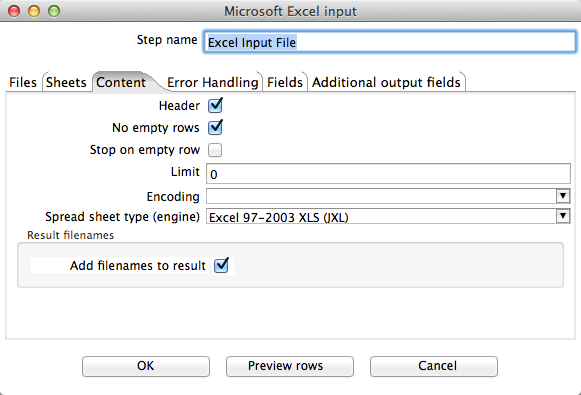
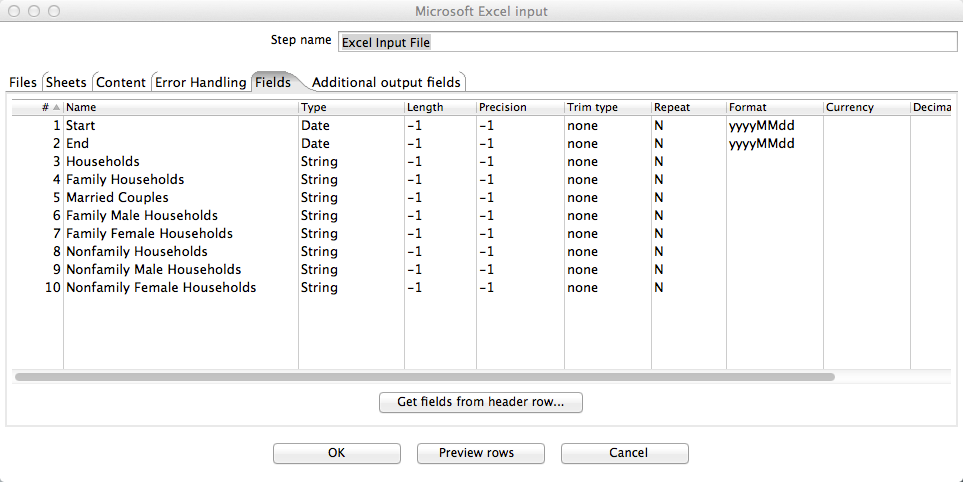

Configure Excel file input
Notice: your data source must be Internet accessible in order for us to map it to our target schema.
By mapping your source to our site, you are pledging to keep your data available and are hereby
donating it to the public domain.
In this tutorial, we are using census.xls file as an example.
- Double-click on the Excel file input step.
- The configuration window belonging to this kind of step will appear. Here you'll indicate the location, format and content of the input file.
- Only if needed, replace the default name with one that is more representative of this step's function. In this case, type in Step name field the name of your excel file.
- In the File ordirectory field, type the name and location of the input file. Press “Add”, location of selected filename will be displayed in Selected files field.
Note:Your file should have be online. If your file is locally based, click here to upload your file first.

- Go to Sheet page, and when no sheet specified. An “!” can be seen before Sheet. Click Get sheetnames to add all sheets from your excel file to the grid if they have the same schema. Otherwise, add one sheet once and create separate transformations for different sheets.Specify the Start row of related table in the sheet within your excel file.
Note: Spoon counts rows from zero, while excel starts counting from one. In this example, the transformation will start from row 10, which corresponds to row 11 in our test file.

- Go to Content page, and make sure to change Spread sheet Type to match the type of excel file you are using (i.e. xls vs xlsx)

- Go to Field page. An “!” can be seen before Field because no sheet has been specified yet. Click Get fields from the start row to add the fields sheet to the grid.
- Also, change Type to String for all fields, except for dates. Change any date to match it's respective input date format.
No need to change Length and Precision.

- Click OK to finish defining the step Excel file input.